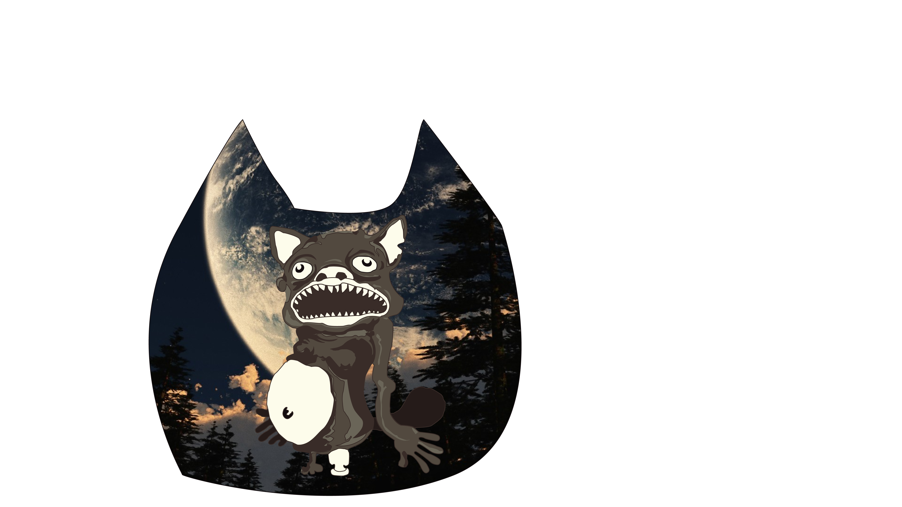
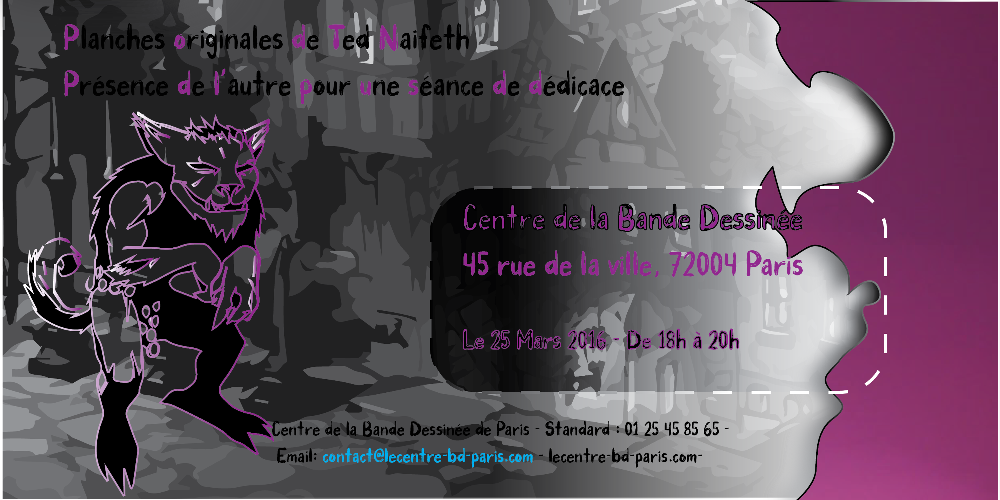

Lors de ma première année en études visuelles, multimédia et arts numériques, nous avons entamé l'apprentissage d'Illustrator, un logiciel de création graphique vectorielle. Notre chargé de TD nous a d'abord expliqué ce qu'était ce logiciel et rapidement nous sommes passés à la pratique. Afin de comprendre certains principes, notre apprentissage est passé par la méthode « dure », celle de l'utilisation du pathfinder.
Mais avant de passer au pathfinder, il nous a fallu apprendre à manier la plume sur Illustrator. Sous la supervision de notre chargé de TD, un dessin a été imposé : Mr Hug. Il a fallu reproduire le dessin avec l'outil plume avant de réaliser le pathfinder. Cette méthode permet en effet d'éviter la superposition de couleur lors de l'impression ; elle n'est pas souvent utilisée mais chez certains imprimeurs c'est nécessaire. En voici le résultat ci-dessous.
Une fois la réalisation de Mr Hug terminée, la conception de la carte d'invitation a pu démarrer. Pour la première fois, un projet à visée professionnelle nous a été proposé. Il a été possible de se mettre dans la peau d'un graphiste, avec la demande d'une carte d'invitation ainsi que des contraintes de type « respecter le style de l'auteur ». L'auteur choisi par la chargée de TD a été Ted Naifeh, pour réaliser une invitation au vernissage de l'exposition du Centre de la Bande Dessinée de Paris ; il fallait mettre en avant la série de comic à travers la carte tout en ayant une typographie qui convienne au minimum.
Images


